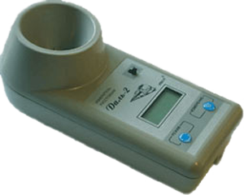
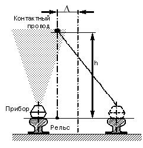

Ультразвуковой измеритель расстояния "Даль-2" для железных дорог
Ультразвуковой цифровой прибор "Даль-2" (измеритель расстояния) позволяет без приближения к токоведущим частям и без снятия напряжения с контактной железнодорожной сети определять высоту контактного провода (габарит контактного провода) относительно плоскости головок рельсов и боковое смещение его относительно геометрической оси железнодорожного пути.
Ультразвуковой цифровой прибор "Даль-2" разработан на базе ультразвукового измерителя расстояний ЛЭП "Даль" для применения на железной дороге.
При необходимости прибором "Даль-2" можно поочередно измерить расстояния до двух или трех проводов, расположенных друг над другом, что дает возможность рассчитать расстояния между ними.
Порядок применения прибора "Даль-2" смотрите в Руководстве по эксплуатации Даль-2
Область применения
- Применение прибора "Даль-2" возможно в железнодорожном и городском транспорте, энергетике, связи, а также в других отраслях промышленности.
- Прибор "Даль-2" позволяет производить измерения расстояний (вертикальный габарит) до трех проводов воздушных линий электропередачи, подвесных кабельных линий, линий связи.
- Зная особенности прибора, с его помощью можно определять высоту пролетов мостов, путепроводов, и других переходов через магистрали.
Особенности применения на контактной железнодорожной сети
- Для измерения высоты контактного провода прибор "Даль-2" следует положить на головку рельса.
- Чтобы определить боковое смещение контактного провода, необходимо провести два измерения расстояния до контактного провода в точках, расположенных по одной линии на параллельно пролегающих рельсах. После этого прибор автоматически осуществляет расчёты и выводит значение бокового смещения контактного провода на цифровой дисплей.
- Прибор "Даль-2" позволяет с высокой точностью определять параметры статического расположения контактного провода не только у опоры, но и в любых точках железнодорожного пути.
- Измеритель расстояния следует расположить под проводами так, чтобы посторонние предметы (здания, деревья) и сам измеряющий не попали в сектор излучения.
- Во время измерения прибор «Даль-2» излучает ультразвуковые волны (сигнал конусообразной формы), которые распространяются в воздухе и, достигнув провода, отражаются в сторону прибора. По скорости прихода волны определяется расстояние от земли до ее нижнего провода (габарит провода).
- Скорость распространения ультразвуковых волн зависит от температуры окружающего воздуха. Для устранения зависимости показаний от температуры в приборе предусмотрена температурная коррекция результатов измерения.
- В условиях сильной влажности (туман, после дождя и т.п.) максимально измеряемое прибором расстояние может уменьшиться. Это не является неисправностью и обусловлено особенностью распространения ультразвуковых волн в воздушной среде.
- В приборе "Даль-2" предусмотрено запоминание результатов измерений и возможен их поочередный многократный просмотр. Также осуществляется справочная индикация температуры окружающего воздуха и напряжения внутреннего источника питания.
- Отключение прибора - автоматическое.
Характеристики:
| Диапазон показаний, м | 3,5 ... 12 |
| Погрешность измерений расстояний, не более, % |
2 |
| Погрешность измерений бокового смещения (от высоты подвеса), не более, % |
1 |
| Габаритные размеры корпуса, мм | 200х90х70 |
| Масса (с элементами питания, без футляра), не более, кг | 0,4 |
| Питание СН - автономное, от двух элементов R6 - AA-UM3 (А316), В |
6 |
| Температурный диапазон, °С | -10 ... +40 |
| Срок службы, год, не менее | 6 |
Разработка и сертификация
Прибор "Даль-2" сертифицирован (Декларация соответствия № RU Д-RU.АГ03.В.58690 от 21.11.2014 г.).
Разработан и изготавливается Научно-производственным центром "Электробезопасность", г. Киров.
Гарантийный срок эксплуатации измерителя расстояния "Даль-2" - 2 года со дня отгрузки с предприятия-изготовителя.
Условия ремонта и поверки приборов "Даль"
В случае отказа прибора в работе или необходимости проведения поверки для прибора «Даль» потребитель составляет сопроводительное письмо-заявку и отправляет его вместе с прибором по адресу: 610000, Россия, г. Киров, а/я 57(почта) или иным способом на ООО «Электробезопасность-Вятка». В сопроводительном письме необходимо указать:
- реквизиты организации;
- заводской номер и дату выпуска прибора;
- требуемое техническое обслуживание (ремонт, поверка – для прибора «Даль»);
- описание неисправности;
- контактное лицо, номер телефона.
Примечание: гарантийный срок эксплуатации прибора – 2 года со дня отгрузки с предприятия-изготовителя. Срок службы– 6 лет. Для приборов «Даль», применяемых в сфере гос.регулирования, обязательна ежегодная поверка (указать в письме-заявке).
Поверка производится бесплатно в случае ремонта прибора в течение первого года гарантии. На после гарантийный ремонт – срок гарантии 6 месяцев. Гарантия не распространяется на ремонт приборов с истекшим сроком службы. Транспортировка не гарантийных приборов осуществляется силами заказчика.